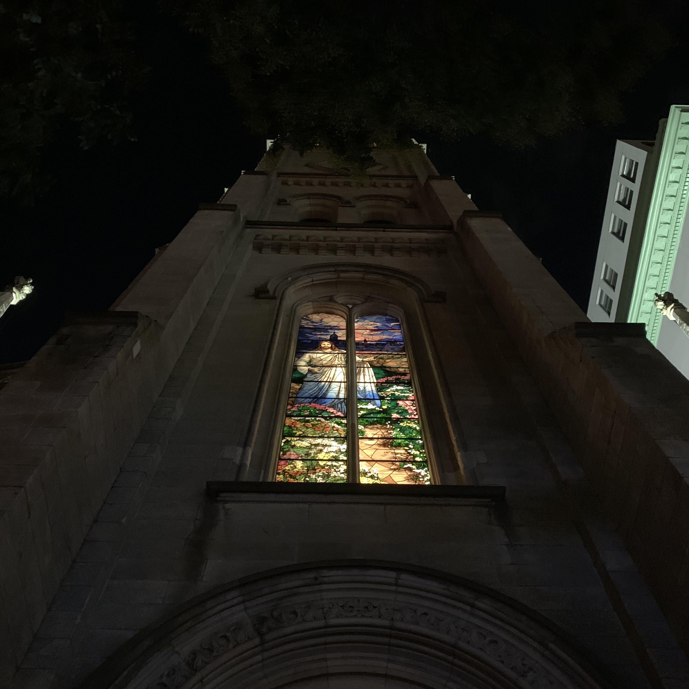

Repeating use of the archive photos to create an entire new piece, blessing New York on September 11th when the landscape photo was taken.
The blurry cross sign is a coincident surprise and I hope this wishes tragedies never happen again.